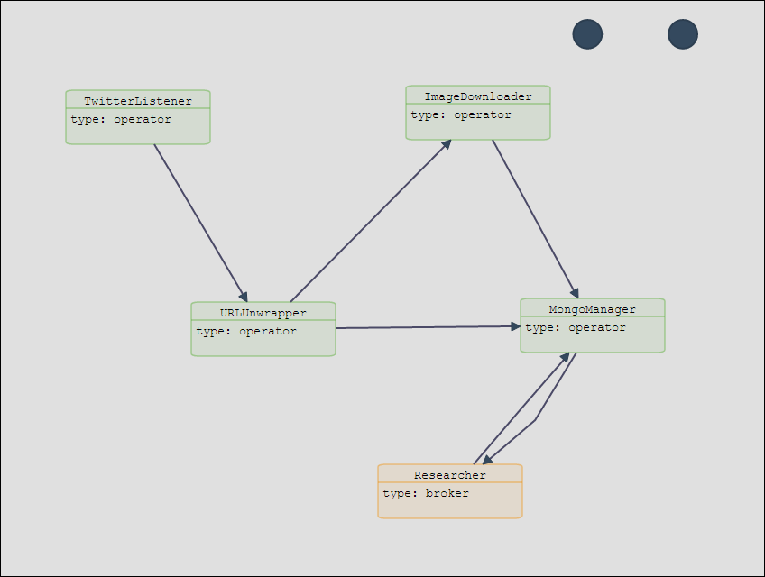

Demonstration
In the following, the OpenZUI interfaces will be demostrated, using the provided test topology.
Usage
- All available servers are registered in OpenZUI.
- Service templates for Netbeans 8 can be downloaded through the appropriate OpenZUI interface.
- The templates can be opened in Netbeans 8 for implementing the services.
- The resulting war files are uploaded in OpenZUI.
- The topology is drawn in OpenZUI.
- The topology is deployed, started and monitored in OpenZUI.
Example
A set of test services are provided for demonstrating the usage of the OpenZoo framework. The user has to upload the 5 test services in OpenZUI and create the following topology:

We define 1 instance of TwitterListener, 2 instances of URLUnwrapper, 2 instances of ImageDownloader, 1 instance of MongoManager and 1 instance of Researcher.
- TwitterListener retrieves tweets using specific keywords (e.g. ["fashion", "dress"]).
- URLUnwrapper filters out tweets containing image URLs and unwrapps short URLs. They are sent to the ImageDownloader. The ones that contain coordinates are sent to the first instance of the ImageDownloader, the rest are sent to the second instance. Tweets without URLs are sent directly to the MongoManager.
- ImageDownloader should normally download images. This function is not implemented, since this is just a demonstration case. The results of ImageDownloader are sent also to MongoManager.
- MongoManager saves the tweets in a collection and the image URLs in another collection.
- The Researcher acts as a request broker. It accepts web requests (POSTs) like the following: {"method": "newer/hotter", "num": 20}. It forwards the requests into the system, waits for the answer and responses back to the caller.
The parameters for the topology nodes are:
TwitterListener
- keywords: ["fashion", "dress"]
- consumerKey, consumerSecret, accessToken, accessTokerSecret: Twitter credentials, ( created in https://apps.twitter.com/).
- instances: 1
- threads per core: 0
URLUnwrapper:
- instances: 2
- threads per core: 2
ImageDownloader:
- instances: 2
- threads per core: 1
MongoManager:
- mongo_collection_messages, mongo_collection_images, mongo_database: Mongo database and collections on a MongoDB server, accessible by a specific user
- instances: 1
- threads per core: 0
Researcher
- instances: 1
- threads per core: 0
After deploying and starting the topology, statistics can be seen in the Topology monitoring interface and the results of the processing can be seen in the MongoDB.